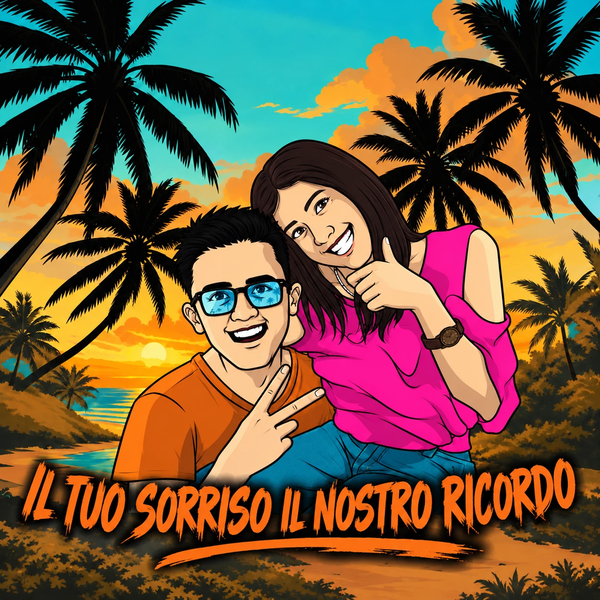

Il Tuo Sorriso, il Nostro Ricordo — associazione culturale di Martano (LE)

Associazione culturale Martano · Lecce
Scopri la nostra storiaChi siamo
Un ricordo che diventa gesto
Titolo PROVVISORIOSiamo un gruppo di giovani tra i 20 e i 30 anni, uniti da un legame speciale. La nostra associazione culturale è nata a Martano per custodire il ricordo di due cari amici: Simone e Francesca.
Simone ci ha lasciato prematuramente in un incidente stradale mentre si recava al lavoro; Francesca a causa di un tumore. Vogliamo portare avanti la loro presenza, il loro spirito e il loro sorriso nella comunità, trasformando il dolore in gesti di solidarietà e amore.
Ogni anno organizziamo una serata commemorativa, promuoviamo tornei di calcetto e pallavolo destinando il ricavato a iniziative solidali. Stiamo inoltre preparando attività dedicate alla prevenzione e alla sensibilizzazione dei giovani.
Testo tratto dalla presentazione dell'associazione (pagine 2–3). Da approvare prima della pubblicazione; non sono state aggiunte informazioni biografiche ulteriori.
da fornire
da fornire
«Il tuo sorriso, il nostro ricordo»
Beneficenza
Quello che abbiamo
restituito
Foto
Galleria
fotografica
Ritrovati nelle foto delle nostre serate e scaricale, una alla volta o tutte insieme. Nessuna registrazione.
Testo PROVVISORIOSponsor
Chi cammina con noi
Nessuno sponsor reale disponibile: i riquadri sono SEGNAPOSTO. Si mostrano le due varianti; la scelta dipende dal numero di loghi.
Variante A — pochi loghi (fino a ~8): griglia statica
- Logo sponsor
- Logo sponsor
- Logo sponsor
- Logo sponsor
- Logo sponsor
- Logo sponsor
Variante B — molti loghi: due righe in movimento contrario
- (elenco testuale degli sponsor, letto dagli screen reader una sola volta)
Grazie.
A chi ha ballato, cucinato, montato un palco, comprato un biglietto o semplicemente è venuto. Ogni sorriso di quelle serate è diventato qualcosa di concreto.
Testo PROVVISORIO — da scrivere con l'associazione